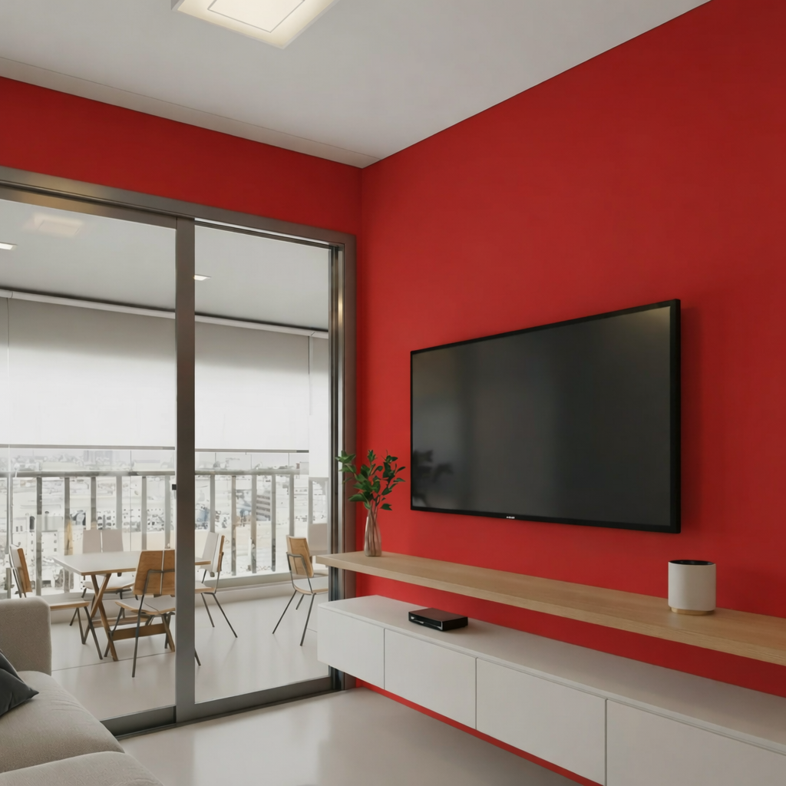
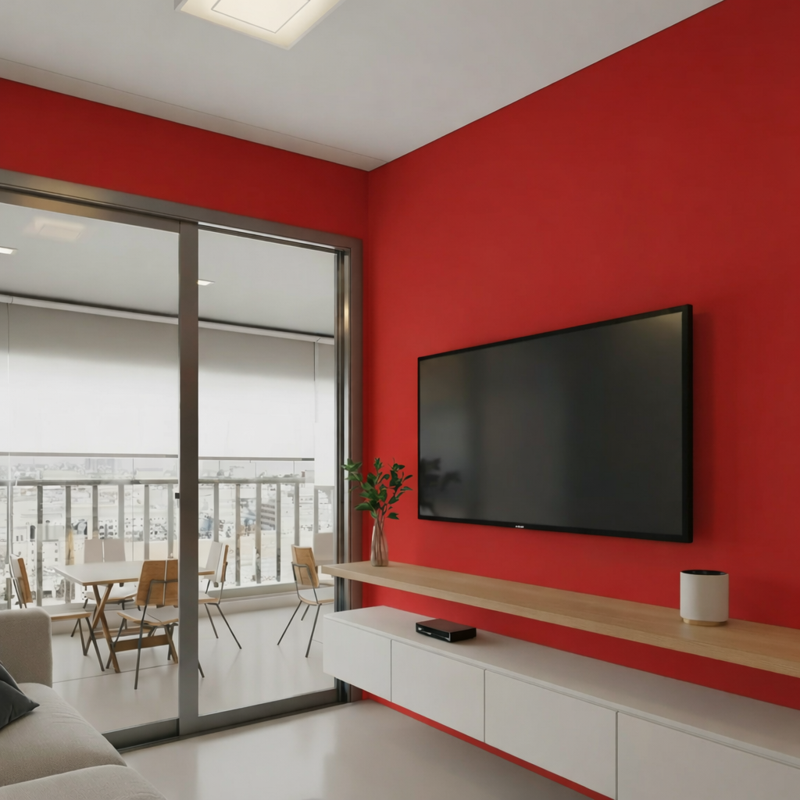

Lukscolor Tradição Acrílico Premium Plus Lavável
Descubra a Lukscolor Tradição Acrílico Premium Plus
Com o TRADIÇÃO ACRÍLICO PREMIUM PLUS LUKSCOLOR você protege e decora superfícies externas e internas, em geral. Proporciona um fino acabamento fosco aveludado que valoriza ainda mais seus ambientes. Com Suave Perfume, proporciona conforto e bem-estar, permitindo a sua permanência no ambiente do início ao fim da pintura. É um produto com alto poder de cobertura e rendimento, apresentando durabilidade e resistência às ações do tempo e a fungos (mofo), excedendo em todos esses quesitos, as normas estabelecidas para a categoria Premium pelo Programa Setorial de Qualidade para Tintas Imobiliárias (PSQ-TI).